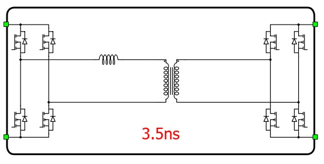
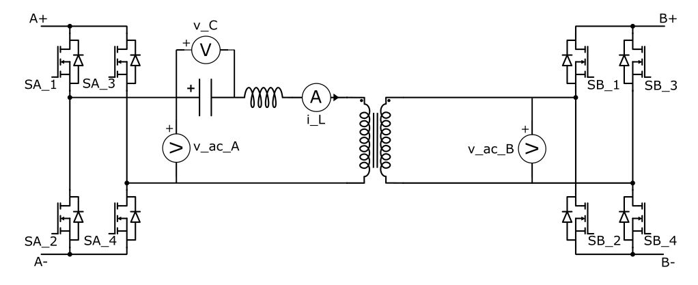
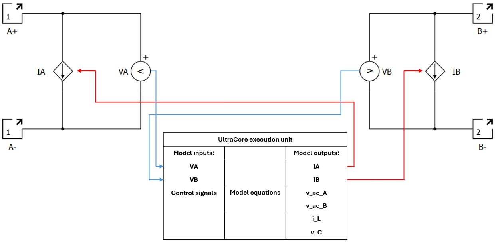

Dual Active Bridge
Description of the Dual Active Bridge converter in Schematic Editor.

Schematic Block Diagram
A schematic block diagram of the Dual Active Bridge with corresponding switch naming is given in Figure 2.

In real-time simulation, this converter block uses the dedicated UltraCore FPGA hardware resource in order to achieve a reduced simulation step for this topology.
Control
Selecting Digital inputs as the Control parameter enables assigning gate drive inputs to any of the digital input pins (from 1 to 32(64)). For example, if SA_1 is assigned to 1, the digital input pin 1 will be routed to the SA_1 switch gate drive. In addition, the gate_logic parameter selects either active high (High-level input voltage VIH turns on the switch), or active low (Low-level input voltage VIL turns on the switch) gate drive logic, depending on the design of the external controller. In TyphoonSim, digital signals are read from the internal virtual IO bus. Hence, if some signal is sent to digital ouput 1, it will appear on digital input 1.
Selecting Internal modulator as the Control parameter, enables use of the internal PWM modulator for driving switches instead of digital input pins. In this configuration, nine additional component inputs will be present. The En input is used to enable/disable the internal PWM modulator. In_a1, In_a2, In_b1, and In_b2 are used as referent signal inputs for the corresponding internal PWM modulator in legs A1, A2, B1, and B2, respectively. Additionally, Offset_a1, Offset_a2, Offset_b1, and Offset_b2 are used as carrier offsets for the corresponding internal PWM modulator in legs A1, A2, B1, and B2, respectively. If Variable carrier frequency is selected as the Operation mode for the Dual Active Bridge's internal modulator, an additional port Freq will be present. This port is used as a frequency input for the internal PWM modulator.
Extras
In real-time simulation, Short-circuit resistance - A and Short-circuit resistance - B are used to define the resistance that will be taken into consideration if some of the legs goes to short-circuit mode. Short-circuits are modelled using short-circuit resistance, which means that if a leg is in short-circuit mode, current drawn from its corresponding DC side will be Vdc_A(B)/Short-circuit resistance - A(B), where Vdc_A(B) is the DC voltage of the corresponding DC side.
Model description in real-time simulation
In real-time simulation, the Dual Active Bridge runs on a dedicated UltraCore hardware solver module, which is highly optimized to simulate the dynamics of fast-switching converter topologies with enhanced resolution. This means that the Dual Active Bridge converter block does not utilize the same resources that are typically used for other converter blocks, and the weight of the Dual Active Bridge converter for real-time simulation is 0.
Electrical circuit interface in real-time simulation
As described in Electrical circuit interface, every component that uses the UltraCore hardware resource contains an interfacing electrical circuit towards the rest of the circuit. The Dual Active Bridge component in the Typhoon HIL Schematic Editor Library uses the current source interface. The interface is formulated in such a way that the voltages are inputs to the dedicated UltraCore execution unit, while the currents are its outputs. Figure 3 shows the circuit interface of the Dual Active Bridge comoponent.

Besides IA and IB which directly affect the surrounding circuit, there are additional component outputs:
- i_L - represents the inductor's current
- i_L.cmp_out - represents the comparator output of the i_L signal against zero, using a greater or equal operator, updated at the solver simulation step
- v_C - represents the capacitor's voltage (available if Enable Series Capacitor is active)
- v_ac_A and v_ac_B - AC voltages for sides A and B, respectively.
Placement of all measurements is shown in Figure 2.
Digital Alias
If a converter is controlled by digital inputs, an alias for every digital input used by the converter will be created. Digital input aliases will be available under the Digital inputs list alongside existing Digital input signals. The alias will be shown as Converter_name.Switch_name, where Converter_name is name of the converter component and Switch_name is name of the controllable switch in the converter.
Ports
- A+ (electrical)
- DC side A+ port.
- A- (electrical)
- DC side A- port.
- B+ (electrical)
- DC side B+ port.
- B- (electrical)
- DC side B- port.
- En (in)
- Available if Internal modulator control is selected
- Used to enable/disable internal modulator
- In_a1 (in)
- Available if Internal modulator control is selected
- Used to specify modulation signal value for internal modulator in leg A1
- In_a2 (in)
- Available if Internal modulator control is selected
- Used to specify modulation signal value for internal modulator in leg A2
- In_b1 (in)
- Available if Internal modulator control is selected
- Used to specify modulation signal value for internal modulator in leg B1
- In_b2 (in)
- Available if Internal modulator control is selected
- Used to specify modulation signal value for internal modulator in leg B2
- Offset_a1 (in)
- Available if Internal modulator control is selected
- Used to specify modulator's carrier phase offset in leg A1
- Offset_a2 (in)
- Available if Internal modulator control is selected
- Used to specify modulator's carrier phase offset in leg A2
- Offset_b1 (in)
- Available if Internal modulator control is selected
- Used to specify modulator's carrier phase offset in leg B1
- Offset_b2 (in)
- Available if Internal modulator control is selected
- Used to specify modulator's carrier phase offset in leg B2
- Freq (in)
- Available if Internal modulator control is selected and Variable carrier frequency is selected as the modulator's operation mode
- Used to specify modulator's carrier frequency
Control (Tab)
- Control
- Specifies how switches are controled. It is possible to choose between: Digital inputs and Internal modulator
- More details about each type of control can be found in the Control section
- If Digital inputs is selected as Control, the following
properties can be used:
- SA_1
- Digital input that is used to control SA_1 switch
- SA_1_logic
- Logic that will be applied to control signal for SA_1
- Active high or active low
- SA_2
- Digital input that is used to control SA_2 switch
- SA_2_logic
- Logic that will be applied to control signal for SA_2
- Active high or active low
- SA_3
- Digital input that is used to control SA_3 switch
- SA_3_logic
- Logic that will be applied to control signal for SA_3
- Active high or active low
- SA_4
- Digital input that is used to control SA_4 switch
- SA_4_logic
- Logic that will be applied to control signal for SA_4
- Active high or active low
- SB_1
- Digital input that is used to control SB_1 switch
- SB_1_logic
- Logic that will be applied to control signal for SB_1
- Active high or active low
- SB_2
- Digital input that is used to control SB_2 switch
- SB_2_logic
- Logic that will be applied to control signal for SB_2
- Active high or active low
- SB_3
- Digital input that is used to control SB_3 switch
- SB_3_logic
- Logic that will be applied to control signal for SB_3
- Active high or active low
- SB_4
- Digital input that is used to control SB_4 switch
- SB_4_logic
- Logic that will be applied to control signal for SB_4
- Active high or active low
- Gate control enabling -A
- If enabled, gives a possibility to control if changes in the gate control signal are applied or not for converter A
- Sen -A
- Available if Gate control enabling -A is enabled
- Digital input that enables/disables switching for converter A
- Sen_logic -A
- Available if Gate control enabling -A is enabled
- Logic that will be applied to Sen -A signal
- Gate control enabling -B
- If enabled, gives a possibility to control if changes in the gate control signal are applied or not for converter B
- Sen -B
- Available if Gate control enabling -B is enabled
- Digital input that enables/disables switching for converter B
- Sen_logic -B
- Available if Gate control enabling -B is enabled
- Logic that will be applied to Sen -B signal
- SA_1
- If Internal modulator is selected as Control, the following
properties can be used:
- Operation mode
- Specifies the source of the internal modulator carrier frequency
- If Operation mode is Fixed carrier frequency, then frequency can be specified on the component properties
- If Operation mode is Variable carrier frequency, then the frequency can be specified using a signal processing port
- Carrier frequency (Hz)
- Available if the Operation mode is a Fixed carrier frequency
- Specifies the internal modulator's carrier frequency
- Dead time
- Specifies dead time for the internal modulator in seconds
- Reference signal [min, max]
- Specifies carrier signal minimal and maximal value
- Vector containing two values: the minimal carrier signal value, followed by the maximal carrier signal value
- Load mode
- Specifies on which event the new value of the modulation signal will be applied
in the internal modulator
- If on min is selected, new value will be applied when carrier reaches minimal value
- If on max is selected, new value will be applied when carrier reaches maximal value
- If on either is selected, new value will be applied when carrier reaches minimal or maximal value
- Specifies on which event the new value of the modulation signal will be applied
in the internal modulator
- Operation mode
Electrical (Tab)
- Enable Series Capacitor
- Enables capacitor connected in series with inductor. If enabled, an additional property C for definig capacitor value will appear.
- C
- Series capacitor capacitance
- Visible if Enable Series Capacitor is enabled
- L
- Inductance of a Dual Active Bridge inductor
- R series
- Resistance of a series connected resistor
- Transformer turns ratio (B/A)
- Defines internal transformer ratio between sides B and A
Extras (Tab)
- Short-circuit resistance - A
- Resistance for side A used to calculate short circuit current if side A is shorted
 This property is not supported in TyphoonSim. Changing its
value will not affect TyphoonSim simulation at all.
This property is not supported in TyphoonSim. Changing its
value will not affect TyphoonSim simulation at all.
- Short-circuit resistance - B
- Resistance for side B used to calculate short circuit current if side B is shorted
- This property is not supported in TyphoonSim. Changing its
value will not affect TyphoonSim simulation at all.
- Public - Components marked as public expose their signals on all levels.
- Protected - Components marked as protected will hide their signals to components outside of their first locked parent component.
- Inherit - Components marked as inherit will take the nearest parent 'signal_access' property value that is set to a value other than inherit.